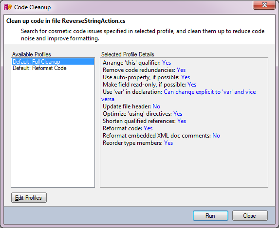

Code Cleanup
If you want to fix an error at a particular location in code, you can create a Quick-Fix. But what if you need to fix that same error in all locations in a file, the whole project, or even the whole solution? This is there the concept of Code Cleanup comes into play.
The first thing to note about Code Cleanup is that it does not use highlightings and quick-fixes. Why not? Highlightings are not used because there might be issues that only Code Cleanup applies to. As for Quick-Fixes themselves, it pays to remember that there might be more than one quick-fix per highlighting, so there’s no real certainty that you’d be using the right one.
Profiles and Descriptors
Take a look at the following screenshot:

As you can see, code cleanup consists of several profiles. A profile is simply a set of settings: in one profile, for example, the Arrange ‘this’ qualifier option might be set to Yes, in another, to No. The two profiles you see in the above screenshot - Full Cleanup and Reformat Code - are default profiles. They cannot be deleted, and internally, the R# API has enumerations for each of these. Of course, users can also have their own profiles created in the Edit Profiles dialog.
Each of the settings listed under the profile details is provided using a descriptor. The descriptor is a class that:
- Inherits from one of the
CodeCleanupOptionDescriptorclasses. For example, to create a boolean setting, you would inherit fromCodeCleanupBoolOptionDescriptor. - Is decorated with the
DefaultValueattribute, specifying its default value. Note however that these default values are effectively overridden when it comes to the built-in code cleanup profiles. - Is decorated with the
DisplayNameattribute, which contains the string displayed in the UI. - Is decorated with the
Categoryattribute, indicating the option’s applicability. A set of ready-made categories can be found as static members of theCodeCleanupOptionsDescrpitorclass.
Here’s what a typical option descriptor looks like:
[DefaultValue(false)]
[DisplayName("Replace Math.Pow() integer calls")]
[Category(CSharpCategory)]
private class Descriptor : CodeCleanupBoolOptionDescriptor
{
public Descriptor() : base("ReplaceMathPowIntegerCalls")
{
}
}Option descriptors are typically stored in and returned from the code cleanup module that uses them.
Code Cleanup Module
The code cleanup module is a component that provides code cleanup functionality. To count as a code cleanup module, all a class has to do is implement the ICodeCleanupModule interface and be decorated with the CodeCleanupModule attribute.
The module is customizable with the descriptors we’ve just seen, and has a Descriptors member to yield all the descriptors that are available to it. For example:
private static readonly Descriptor descriptor = new Descriptor();
public ICollection<CodeCleanupOptionDescriptor> Descriptors
{
get { return new[] {descriptor}; }
}In order to figure out whether the module is applicable or not, we must implement the IsAvailable() method:
public bool IsAvailable(IPsiSourceFile sourceFile)
{
return sourceFile.GetPsiFile<CSharpLanguage>() != null;
}The above simply checks that the file is a C# file.
Also, as mentioned previously, we must provide default values for the module’s descriptors for the two built-in code cleanup templates. This is done in the SetDefaultSetting() method:
public void SetDefaultSetting(CodeCleanupProfile profile, CodeCleanup.DefaultProfileType profileType)
{
switch (profileType)
{
case CodeCleanup.DefaultProfileType.FULL:
profile.SetSetting(descriptor, true);
break;
default:
profile.SetSetting(descriptor, false);
break;
}
}Finally, most of the modifications happen in the Process() method. This is the method where code is ‘cleaned up’, i.e. modified. Unlike some of the utility base classes (e.g., BulbItemImpl), the implemented interface provides no plumbing for transacted behavior, which means that to perform modifications on the document you’ll need to write code similar to the following:
file.GetPsiServices().PsiManager.DoTransaction(() =>
{
using (shellLocks.UsingWriteLock())
{
// your changes here
}
}, "Code cleanup");For a complete Code Cleanup example, see the SamplePlugin project in the Samples folder of the SDK.